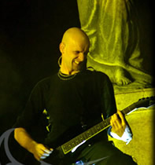
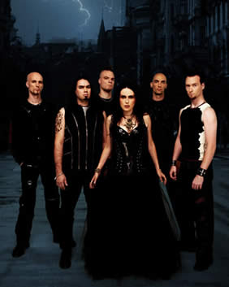
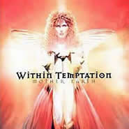

Entrevista
de Robert Westerholt à Eliton Tomasi
Quando uma banda lança um disco acima da média como foi o caso de Enter, o primeiro trabalho do Within Temptation, sempre existe uma certa pressão por parte de público e mídia em relação ao próximo álbum. Todos esperam que o novo disco seja ainda melhor. Mesmo sendo Mother Earth ainda o segundo álbum, vocês sofreram esse tipo de pressão? Sim. Teve um espaço muito grande entre os dois álbuns e nós tínhamos que fazer algo ainda melhor. As pessoas estavam esperando isso já há um bom tempo! Sentimos que elas estavam bem excitadas em relação ao próximo trabalho da banda.
Na minha opinião vocês conseguiram, pois Mother Earth é ainda melhor que Enter! Eu diria que o principal ponto que contribuiu para isso foi o lado emocional do disco. Mother Earth é um álbum repleto de emoções e sentimentos em sua opinião? Absolutamente! Existem diferentes tipos de emoções no disco! Nós gostamos de ver nossas canções como pequenas histórias, pois cada história tem sua própria emoção. Achamos que desta maneira a audição se torna mais interessante.
A principal referência para a música do Within Temptation é a vocalista Sharon den Adel, é lógico, sem esquecer do talento dos outros músicos. Este novo disco vem para completar a idéia que Sharon é uma das melhores cantoras do estilo da atualidade. Vocês realmente encaram a voz dela como o principal elemento da música do Within Temptation? Como banda, nós nos sentimos sortudos em ter uma vocalista como a Sharon. Ela tem a habilidade de usar a sua voz de várias maneiras. Não existem limites para a sua voz! Isso torna bem mais fácil a tarefa de compor músicas, pois você pode compor quase tudo que quiser que ela irá cantar. Ao vivo ela também tem uma presença de palco muito forte e isso estimula todos os outros membros da banda.
A maioria das bandas no estilo do Within Temptation procura explorar apenas o vocal feminino. No disco anterior vocês ainda tinham backing vocals urrados, porém em pequenas doses. Já em Mother Earth, nem mesmo estes backing urrados aparecem! Vocês nunca sentiram a necessidade de ter um vocalista masculino na banda? Não, nunca pensamos em ter um vocal masculino na banda. Para as músicas do Mother Earth, achamos que não seria necessário adicionar nem estes backings pois a música já soava completa! Porém, em nossos shows, ainda tocamos material antigo. Nosso set list é dividido em 40% do Enter, 10% do The Dance e 50% do Mother Earth.
Mother Earth traz trabalhos incríveis de vozes! Vocês até contaram com um coral formado por quatro pessoas. Vocês realmente queriam explorar bem as vozes neste novo disco ou tudo fluiu naturalmente? Bem, nós sabíamos que a Sharon poderia contribuir mais com a voz do que fez em Enter e no The Dance. Com isso, nós tentamos escrever músicas que dessem a possibilidade dela usar sua voz de diferentes maneiras! Sobre o coral, eu sempre adorei corais. Acho que eles criam um clima místico e pesado. Quando nosso produtor nos deu a oportunidade de usar um coral nós não pensamos duas vezes. Os corais completam a música!
Pelo que podemos ver, toda a banda tem uma participação no processo de composição. Como você dividem este processo de tal maneira que todos os integrantes coloquem suas próprias idéias e influências? A maioria das músicas sou eu quem escrevo, ai a Sharon coloca os vocais, e depois o resto da banda completa as músicas. É claro que no processo final de gravação, ainda entram os 10% restantes. Nós trabalhamos como um time, todos tem sua participação.
No meu ponto de vista, a banda não trabalhou muito o peso neste novo disco. As músicas estão mais leves que no álbum anterior. Vocês realmente queriam soar menos pesados que o disco anterior? Eu não concordo com você! Existem apenas três músicas mais leves no disco. Todo o resto das músicas são no mínimo bombásticas e pesadas como as músicas do Enter. Muitas músicas são mais cadenciadas e tem ainda mais riffs pesados. Eu acho que você ficou com esta impressão devido a produção, pois na mixagem as guitarras não ficaram tão altas quanto ao Enter. Mas em relação às músicas, elas estão no mínimo tão pesadas quanto as do Enter. Aumente o seu som ou nos veja ao vivo que você entenderá o que estou dizendo.
A décima faixa, In Perfect Harmony, nos faz lembrar de músicas New Age e cantoras como Enya. Vocês realmente sofrem influência desse tipo de música? Eu sempre gostei de coisas nessa linha. Sempre gostei mais de Clanned do que de Enya inclusive. Outras influências que temos são de trilhas de filmes irlandeses como Rob Roy e Braveheart...
A nona faixa, Dark Wings, conta com a participação de Arjen Lucassen do Ayreon. Como rolou a idéia de chamá-lo para participar do disco? O Arjen é um amigo do nosso produtor Oscar Holleman que teve a idéia. Além disso, a Sharon já tinha cantado no Into the Eletric Castle do Ayreon.
Houve um problema na primeira prensagem do single Ice Queen. As músicas da banda foram trocadas por de uma banda country. Como isso aconteceu e como esse problema foi resolvido? A empresa que estava prensando o disco, trocou o nosso master por uma banda de country music e inverteram as músicas. Eles prensaram metade dos singles desta maneira e outra metade da forma correta. O problema é que todas as cópias estavam misturadas e a nossa gravadora, a DSFA, teve que ficar procurando pelos singles que estavam legais um por um! Isso para não atrasar o processo de promoção do disco. Depois disso, eles fizeram a empresa prensar a metade que estava errada novamente para botar o disco nas lojas. Tirando o trabalho extra que nossa gravadora teve, isso foi bem engraçado! Eu inclusive tenho ouvido que alguns de nossos fãs estão fazendo de tudo para conseguir uma dessas cópias country, pois se trata de item raríssimo! (risos)
Isto não está muito claro. Mother Earth é um álbum conceitual ou foi apenas inspirado em temas relacionados com à Mãe Natureza? É mais um tema. Todas as músicas tem a ver com a Mãe Natureza mas não é apenas uma só história.
E existe algum tipo de relação entre estas letras e a realidade? É claro, todos os contos de fada tem esta relação. Mas as letras são para suas próprias fantasias.
Qual é a intenção de vocês com a capa do disco? Vocês querem simbolizar a imagem real da Mãe Natureza? Qual é a imagem real? Existe alguma ou mais de uma? É apenas uma possível imagem da Mãe Natureza. A Luz em suas mãos simbolizam a luz da criação e destruição.
Já que estamos falando sobre as capas do Within Temptation, a garota das capas é a Sharon? Sim! Nós tentamos camuflá-la, mas você não caiu nessa! (risos)
O Enter foi lançado aqui no Brasil, e agora é a vez de Mother Earth ter seu lançamento nacional. A banda inclusive é um dos maiores nomes do cast da Hellion Records. O que vocês acham sobre ser uma banda de nome aqui no Brasil? Isso é ótimo, pois isso nos possibilita fazer uma turnê por ai. Eu sempre quis conhecer a América do Sul e não teria oportunidade melhor se eu for ai com o Within Temptation para uma turnê. Eu morei na Espanha durante cinco anos e desenvolvi uma certa relação com o povo latino e sul-americano.
Qual foi o motivo que levou o tecladista Martijin Westerhold, que é seu irmão, a deixar a banda? Onde vocês encontraram o novo tecladista que também se chama Martijin (Spierenburg)? O meu irmão tinha que terminar a faculdade e o Within Temptation estava tomando muito o seu tempo. Além disso, ele vivia longe do resto da banda e ter que viajar sempre tornou-se cansativo para ele. O "novo" Martijin já tocou comigo numa banda chamada The Circle. Eu já o conhecia bem e sabia o que poderia esperar dele. Nosso próximo disco já contará com a sua contribuição. Ele se encaixou perfeitamente na banda!
Você e o Martijin eram irmãos, e além disso, a Sharon é sua namorada! Como era manter um relacionamento familiar grande como esse na banda? Isso nunca foi um problema. Como o Martijin saiu, agora a relação é somente entre eu e a Sharon. Para ser sincero, acho que seria impossível eu ter uma relação com a Sharon se ambos não fossem da banda, pois nunca iríamos nos ver. Musicalmente nós nunca temos problemas.
Quais são os planos da banda agora? Estão concentrados somente na turnê ou já pensam em novo disco? Os dois! Nós terminamos uma turnê na Holanda e Bélgica e agora deveremos fazer alguns shows na França e Alemanha. Em setembro faremos dois shows no México aos quais estamos muito excitados! Durante esse tempo, continuaremos escrevendo para o próximo trabalho, mas não sabemos quando ele será lançado.
Extraída de www.within-temptation.com.br
|